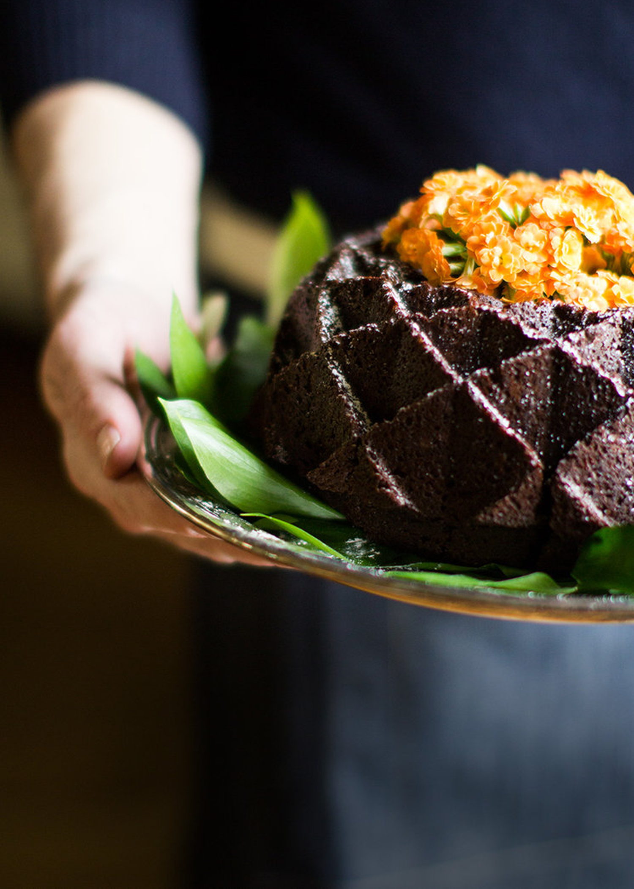

Chocolate Bundt Cake
Brining is a soaking process for poultry, in this case; turkey. A combination of water, stock, salt, herbs and spices, brining will ensure that your turkey is moist and loaded with flavor. How many times have you had an overcooked turkey, causing you to drown it in gravy, just to choke it down? Follow these simple steps and with some patience, you will be kissing those moist-free turkey days goodbye!
You will need:
|
|
- Bring brine ingredients to boil, then kill the heat. Once pot has cooled, refrigerate until cool.
- Add brine mixture to a large bucket and add 1 gallon of heavily iced water. (To avoid diluting the mixture, you can place ice in Zip-loc bags before adding to brine) Submerge your thawed turkey head/breast first (adding extra water if necessary), and refrigerate for 6-8 hours, up to 24hrs. Make sure and turn the bird once, half way through.
- After brining, remove turkey from soak, rinse and pat dry with paper towels, inside and out.
- Prior to cooking, stuff rosemary and fresh sage in to cavity.
- Before roasting turn wings up under themselves and rub entire turkey with Canola Oil. This will help give your turkey that nice golden brown color. This is where I use Alton Brown's aluminum foil, "turkey triangle," trick. You simple take a large sheet of foil, fold in half to make a triangle and generously cover one side with Canola oil. With the Canola oil side down, place the triangle over the top of the turkey, covering the breast, while it's still cold, then remove. You'll add the triangle after roasting for the first 30 minutes. This will prevent the top of the breast from burning! (You can Google Alton's turkey roasting for more details and a video demonstration)
- Put turkey in, legs first and bake at 500 degrees for 30 minutes. After 30 minutes, add the aluminum foil/turkey triangle and reduce heat to 350 or follow the cooking instructions that came with your turkey. (If you're oven isn't deep enough, placing your turkey in sideways is just fine.)
- Using a probe thermometer, cook until the internal temperature of your turkey reaches 165 degrees.
- Remove from oven and let turkey rest for 30 minutes. Garnish with fresh Rosemary. Above, I garnished my turkey with greenery, sliced oranges and blackberries.